Java™ 12 Support
|
| Change project compliance and JRE to 12 |
A quick fix Change project compliance and JRE to 12 is provided to change the current project to be compatible with Java 12.
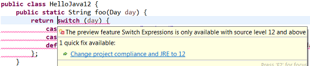
|
| Enable preview features |
Preview features in Java 12 can be enabled using Preferences > Java > Compiler > Enable preview features option.
The problem severity of these preview features can be configured using the Preview features with severity level option.

|
| Set Enable preview features |
A quick fix to Enable preview features option in preferences is provided.
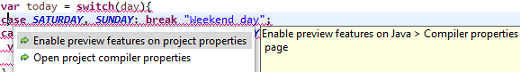
|
| Configure problem severity of preview features |
A quick fix Configure problem severity is provided to update the problem severity of preview features in Java 12.
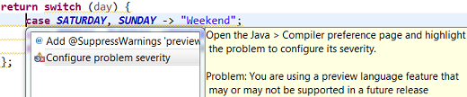
|
| Add default case to switch statement |
A quick fix Add 'default' case is provided to add default case to a enhanced switch statement in Java 12.
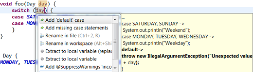
|
| Add missing case statements to switch statement |
A quick fix Add missing case statements is provided for a enhanced switch statement in Java 12.
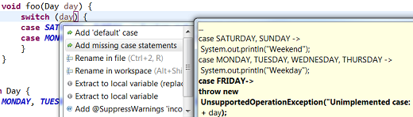
|
| Add default case to switch expression |
A quick fix Add 'default' case is provided to add default case to a switch expression.
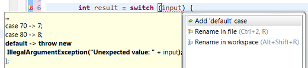
|
| Add missing case statements to switch expression |
A quick fix Add missing case statements is provided for switch expressions.

|
| Format whitespaces in 'switch' |
As Java 12 introduced some new features into the switch construct, the formatter profile has some new settings for it.
The settings allow you to control spaces around the arrow operator (separately for case and default) and around commas in a multi-value case.
The settings can be found in the Profile Editor (Preferences > Java > Code Style > Formatter > Edit...) under the White space > Control statements > 'switch' subsection.
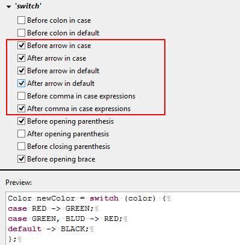
|
| Split Switch Case Labels |
As Java 12 introduced the ability to group multiple switch case labels into a single case expression, a quick assist is provided that allows these grouped labels to be split into separate case statements.
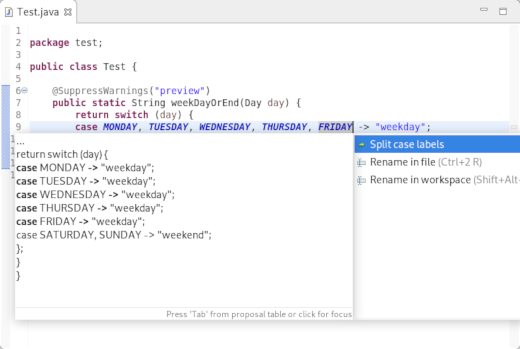
|
Java Editor
|
| Show method parameter names on code as code minings |
In the Java > Editor > Code Mining preferences, you can now enable the Show parameter names
option. This will show the parameter names as code minings in method or constructor calls, for cases where the resolution may
not be obvious for a human reader.
For example, the code mining will be shown if the argument name in the method call is not an exact match of the parameter name or
if the argument name doesn't contain the parameter name as a substring.
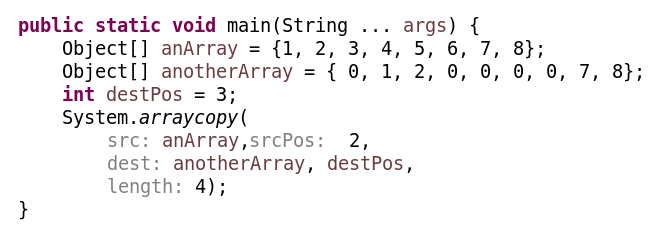
|
| Show number of implementations of methods as code minings |
In the Java > Editor > Code Mining preferences, selecting Show implementations
with the Show References (including implementations) for -> Methods option now shows
implementations of methods.
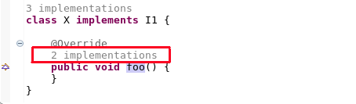
Clicking on method implementations brings up the Search view that shows all implementations
of the method in sub-types.
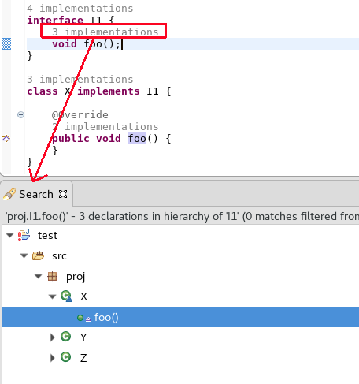
|
| Open single implementation/reference in editor from code mining |
When the Java > Editor > Code Mining preferences are enabled and a single implementation or reference is shown, moving the cursor over the annotation and using Ctrl+Click will open the editor and display the single implementation or reference.
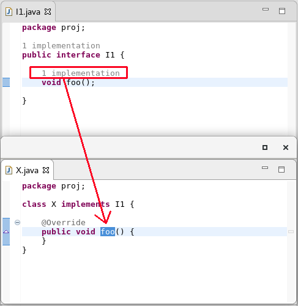
|
| Additional quick fixes for service provider constructors |
Appropriate quick fixes are offered when a service defined in a module-info.java file has a service provider implementation whose no-arg constructor is not visible, or is non-existent.
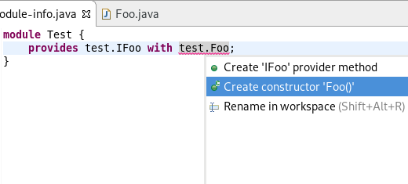
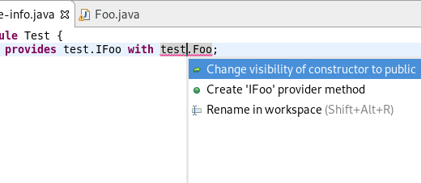
|
| Template to create Switch Labeled Statement and Switch Expressions |
The Java Editor now offers new templates for the creation of switch labeled statements and switch expressions.
On a switch statement, three new templates: switch labeled statement, switch case expression and switch labeled expression
are available as shown below. These new templates are available on Java projects having compliance level of Java 12 or above.
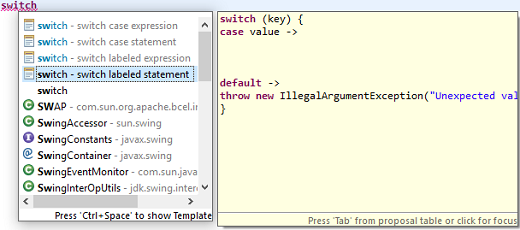
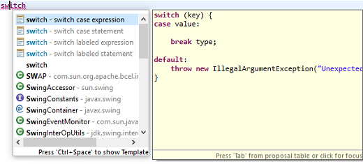
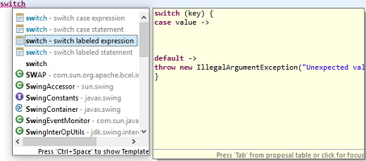
If switch is being used as an expression, then only switch case expression and switch labeled expression
templates are available as shown below:
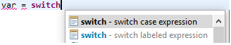
|
Java Views and Dialogs
|
| Improved 'create getter and setter' quick assist |
The quick assist for creating getter and setter methods from fields no longer forces you to create both.
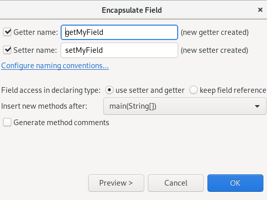
|
| Quick fix to open all required closed projects |
A quick fix to open all required closed projects is now available in the Problems view.
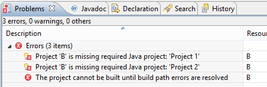
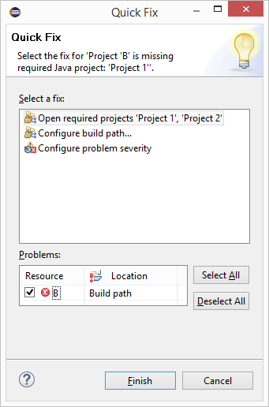
|
| New UI for configuring Module Dependencies |
The Java Build Path configuration now has a new tab Module Dependencies,
which will gradually replace the options previously hidden behind the Is Modular
node on other tabs of this dialog. The new tab provides an intuitive way for configuring all
those module-related options for which Java 9 had introduced new command line options
like --limit-modules etc.
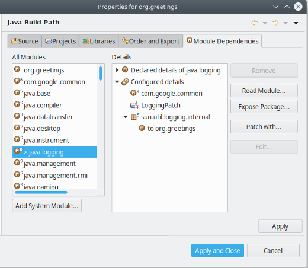
The dialog focuses on how to build one Java Project, here "org.greetings".
Below this focus module, the left hand pane shows all modules that participate in the build,
where decorations A and S mark automatic modules and system modules, respectively. The extent
of system modules (from JRE) can be modified with the Add System Module... and
Remove buttons (corresponds to --add-modules and --limit-modules).
When a module is selected in the left hand pane, the right hand pane allows to configure
the following properties for this module:
- Read Module:
- Select additional modules that should be accessible from the
selected module (corresponds to
--add-reads)
- Expose Package:
- Select additional packages to be exposed ("exports" or "opens")
from the selected module (corresponds to
--add-exports or --add-opens)
- Patch with:
- Add more packages and classes to the selected module
(corresponds to
--patch-module)
|
Java Compiler
|
| Experimental Java index retired |
Eclipse 4.7 introduced a new experimental Java index which was disabled by default.
Due to lack of resources to properly support all Java 9+ language changes,
this index is not available anymore starting with Eclipse 4.12.
The preference to enable it in Preferences > Java is removed and the old index will be always used.
Note: Preferences > Java > Rebuild Index button can be used to delete the existing index files and free disk space.
|
Debug
|
| 'Run to Line' on Ctrl+Alt+Click in annotation ruler |
A new shortcut, Ctrl+Alt+Click, has been added to the annotation ruler that will invoke the 'Run to Line' command and take the program execution to the line of invocation.
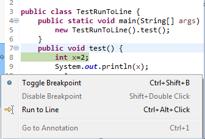
|
| Content assist in Debug Shell |
Content assist (Ctrl+Space) support is now available in the Debug Shell.
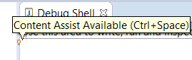
|
| Clear Java Stack Trace Console usage hint on first edit |
The Java Stack Trace Console shows a usage hint when opened the first time. This message is now automatically removed
when the user starts typing or pasting a stack trace.
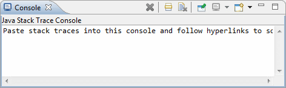
|
| Lambda variable names shown in Variables view |
The Lambda variable names are now shown in the Variables view while debugging projects in the workspace.
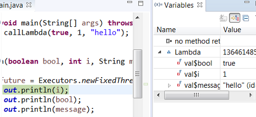
|
JDT Developers
|
| Support for new Javadoc tags |
The following Javadoc tags are now supported by the compiler and auto-complete.
Tags introduced in JDK 8:
@apiNote
@implSpec
@implNote
Tags introduced in JDK 9:
@index
@hidden
@provides
@uses
Tags introduced in JDK 10:
@summary
|
{kind=link}